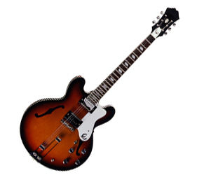
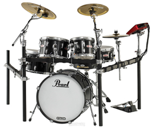
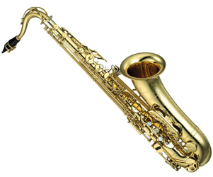

O nama
Akord d.o.o. je pouzdani i poznati Music Shop u Hrvatskoj. Naše poslovnice možete pronaći diljem Hrvatske. Akord firma je nastala prije četiri godine a već je uvelike poznata kod profesionalnih glazbenika, te opskrbljuje veliki broj pordukcijskih kuća diljem balkana. Kao firma surađivali smo sa velikim glazbenicima iz Europe kao što su The Chemical Brothers. U našoj ponudi imamo sve za amaterske i profesionalne glazbenike, također imamo i veliki asortiman glazbenih uradaka stranih i domaćih izvođača kao što su Pink Floyd, The Rolling Stones, The Doors iz Rock svijeta. Također imamo u ponudi RnB, Hip-Hop, Techno, Country i ostale žanrove iz svijeta glazbe. Osim proizvoda nudimo servis, održavanje i instalacije glazbene opreme. U ponudi nudimo razne vrste instrumenata Kordofoni poznatiji kao "glazbala sa žicama" u taj asortiman spadaju trzalačka glazbala i gudačka glazbala. Osim kordofona kod nas možete pronaći mehanička glazbala, glazbala sa tipkama, elektronička glazbala pa čak i tradicionalna narodna glazbala - glazbala koja su specifična za pojedine dijelove neke zemlje. Primjerice u Hrvatskoj, točnije u Istri poznata glazbala su sopile, dvojnice, meh, u Zagori diple, miščić i t.d. Također imamo i edukacijski dio, u našim prostorijama održavamo i školu za početnike svih uzrasta. Osim opreme i glazbene škole u našoj ponudi možete pronaći i mnoštvo literature, knjige za početnike, povijesne i autobiografske vrste. Kao što ste već mogli pročitati imamo jako šarolik asortiman proizvoda i usluga. Za sve to zaslužan je naš tim koji se sastoji od jako talentiranih pojedinaca od kojih su neki i profesori glazbene kulture. Imamo i vrlo talentiran tim umijetnika koji izrađuju instrumente po vašim određenim dimenzijama i ostalim vašim željama. Posijetite naše poslovnice i proširite vaš glazbeni asortiman u svim smijerovima!
Akord d.o.o. | Nepoznato Šetalište 27 | 21000, Split | info@akord-music-shop.hr
- 
- 
- 